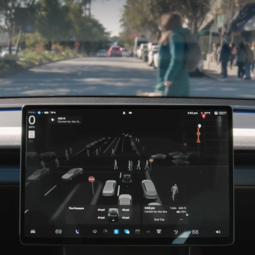

[credit]
[official]
[reviews]
Full Self-Driving (FSD)
Worked on 3D perception and E2E safety for FSD releases to both customer and Robotaxi fleets, contributing to both online models shipped to cars and offline data pipelines scaling to 20K GPUs.
Tesla 2022–2025
Full Self-Driving (FSD)
Worked on 3D perception and E2E safety for FSD releases to both customer and Robotaxi fleets, contributing to both online models shipped to cars and offline data pipelines scaling to 20K GPUs.
Tesla 2022–2025